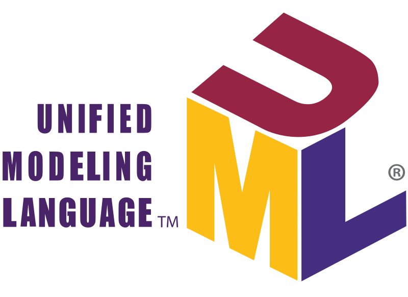
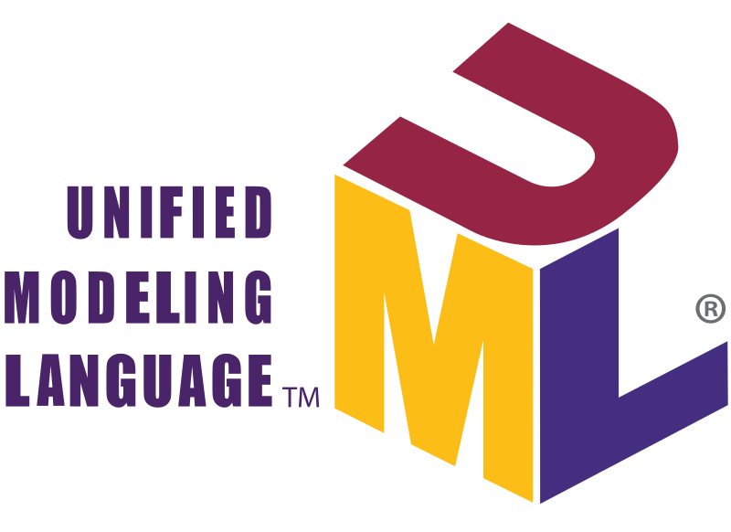

Langages informatiques
Développement d'applications


Divers projets m'ont permis de développer des applications, des jeux et des logiciels. Je suis donc apte à prendre part à des projets nouveaux ou en cours, et les tester, les déboguer et les documenter.
Je peux alors programmer en Java, python et en C#.
Développement Web


Le développement web a pris une partie importante de mon interêt et de ma formation. J'ai en conséquence appris à créer des pages internet responsive, conformes à la norme W3C.
Je maîtrise donc les langages HTML5, CSS3 et JavaScript.
Bases de données


Les bases de données représentent une partie importante dans le développement d'applications, mais également dans la gestion en tant que telle. Il m'a alors fallu apprendre à les utiliser et les créer et les modifier en prennant en compte les contraintes d'intégrité.
Je suis apte à utiliser le langage SQL en construisant et remplissant une base de données, modéliser un MCD sur Microsoft SQL Server, et utiliser mySQL.
Collaboration
 

Afin de pouvoir travailler dans une équipe de développement, j'ai été formé pour utiliser des méthodes de travail efficaces. Ces méthodes couramment utilisées en entreprise me permettent donc d'être performant et de m'adapter au travail qui m'est demandé.
Je sais donc utiliser git, ainsi que de lire, concevoir et faire du reverse engineering en UML.